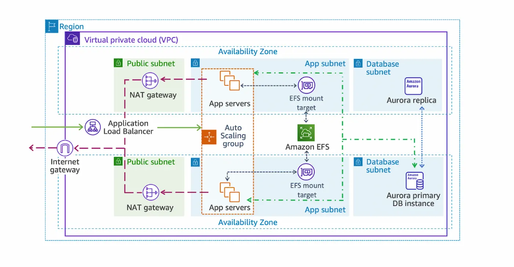
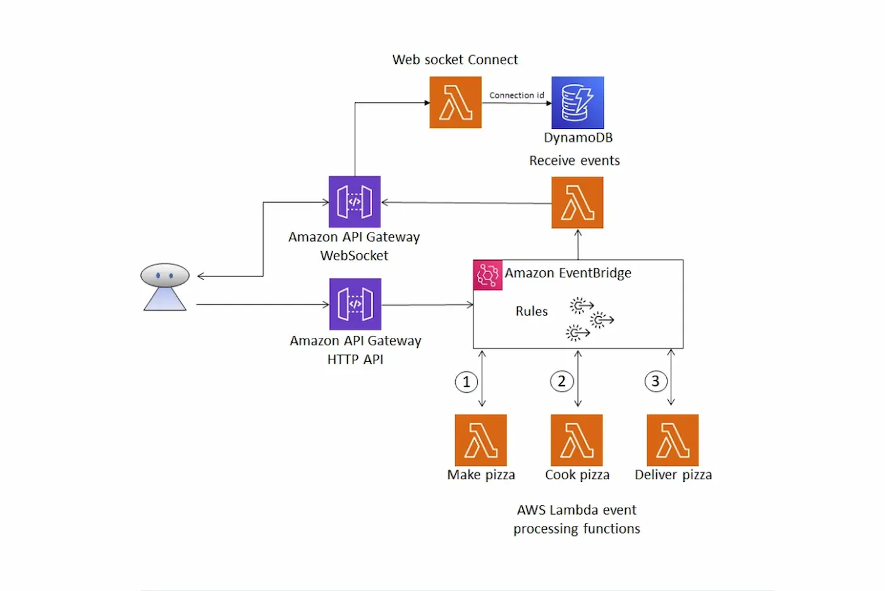

Certifications & Credentials
Achievements
AWS Certifications
Cloud Quest-trained in AWS Solutions Architect, Security, Serverless, and Networking expertise
Hands-on Experience
Building real-world serverless and Scalable solutions with AWS services
Best Practices Focus
Designing secure, scalable, and cost-optimized cloud architectures
Continuous Learner
Always exploring new AWS services and applying concepts to real-world scenarios
Featured Projects
Main Projects

Multi-Tier Architecture
Designed a highly available and scalable multi-tier architecture separating web, application, and database layers to improve performance and security.
Key Features
- Feature 1: Multi-AZ deployment for high availability
- Feature 2: Auto Scaling for handling traffic fluctuations
- Feature 3: Enhanced security with private subnets and security groups
Tradeoffs
Improves availability and performance, but increases operational complexity and infrastructure cost
Services Used:

Serverless Architecture
Built a serverless messaging pipeline to ensure reliable and asynchronous communication between services. Designed to handle traffic spikes without data loss.
Key Features
- Feature 1: Decoupled architecture
- Feature 2: Event-driven auto-scaling with zero idle cost
- Feature 3: Reliable message delivery with durable queues
Tradeoffs
Adds latency and requires handling message duplication and ordering.
Services Used:

Event-Driven Architecture
Designed an event-driven system to enable asynchronous communication and reduce tight coupling between services, improving scalability and flexibility.
Key Features
- Feature 1: Decoupled event-driven design
- Feature 2: Efficient high-volume event handling
- Feature 3: Resilient, independently scalable consumers
Tradeoffs
Debugging and tracing events becomes more complex
Eventual consistencyServices Used:
More Projects
CloudFront Dynamic Content Acceleration
Accelerated global content delivery using CDN edge locations and caching strategies to reduce latency and improve performance
Improves global performance, but adds cache invalidation complexity and additional cost
View on GitHubThreat Hunting with AWS Network Firewall
Implemented deep packet inspection and traffic filtering to detect and control malicious network activity
Enhances network security, but increases latency and requires complex rule management
View on GitHubSecurity Group Automation Lambda
Automated dynamic security group rule updates to enforce consistent network access and reduce manual intervention
Improves operational efficiency, but incorrect automation logic can lead to unintended access or service disruption
View on GitHubVPC Network Access Analyzer
Analyzed network access paths to identify unintended exposure and validate secure connectivity across resources
Provides visibility into access paths, but requires manual remediation and does not enforce changes automatically
View on GitHubTechnical Expertise
Cloud Infrastructure
AWS Services
Let's Collaborate
Interested in discussing innovative projects and opportunities in AWS